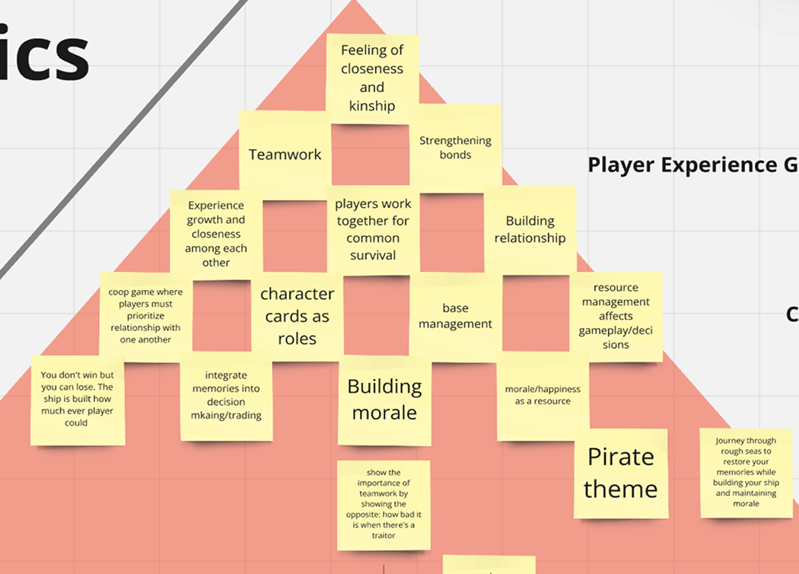
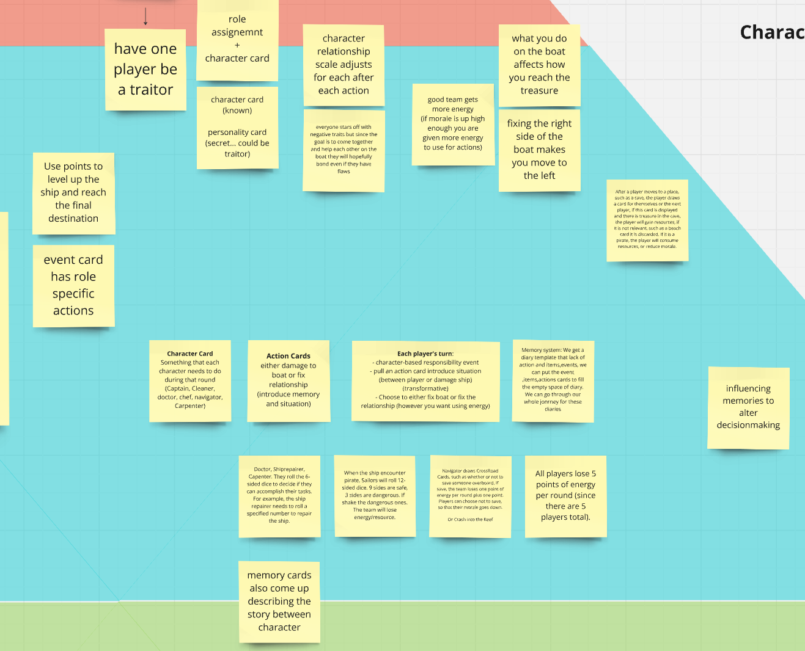
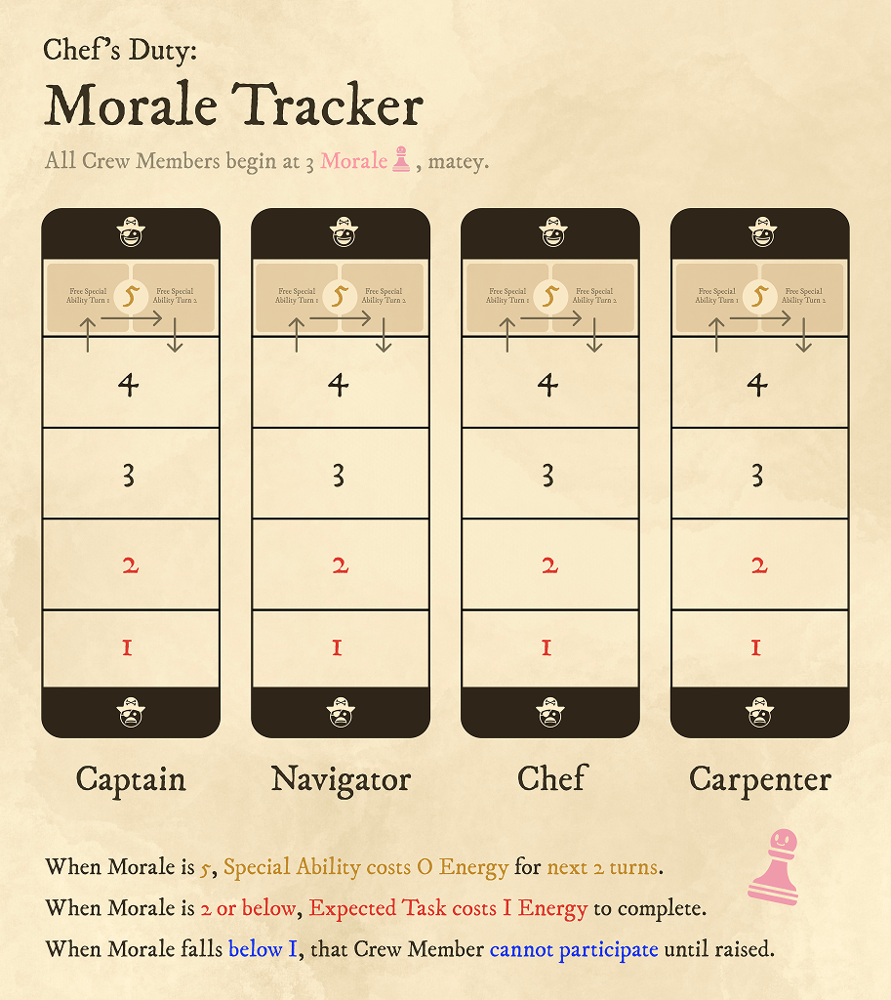
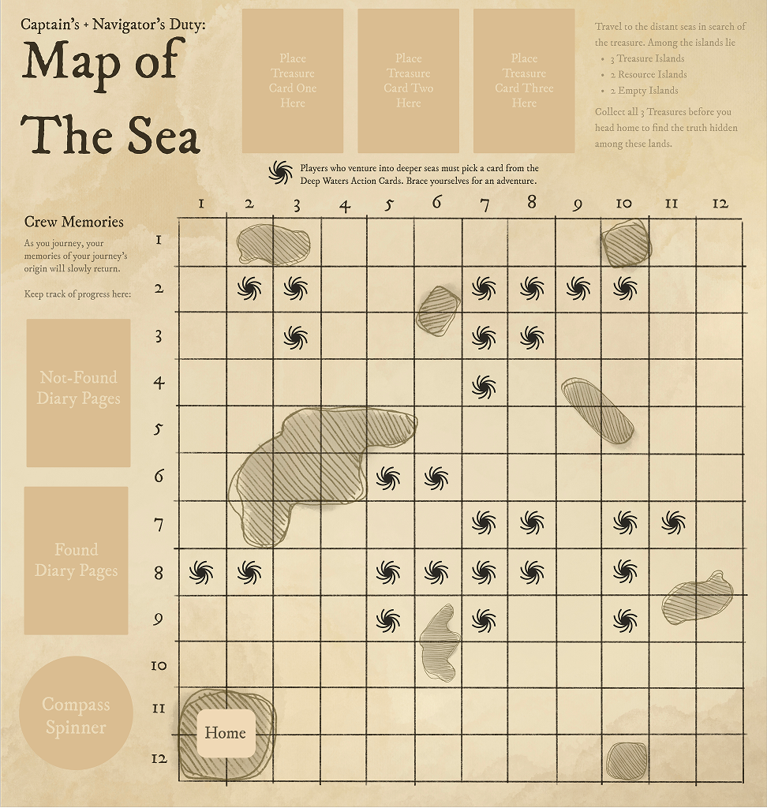
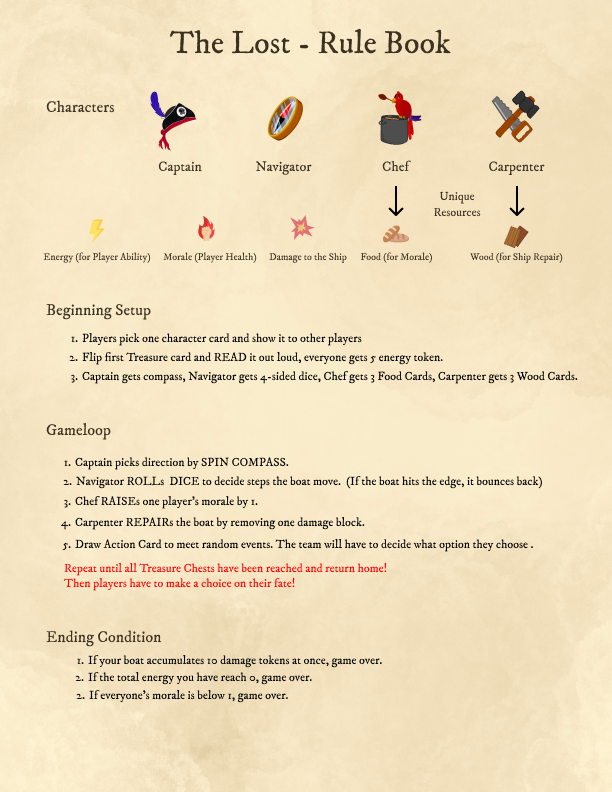
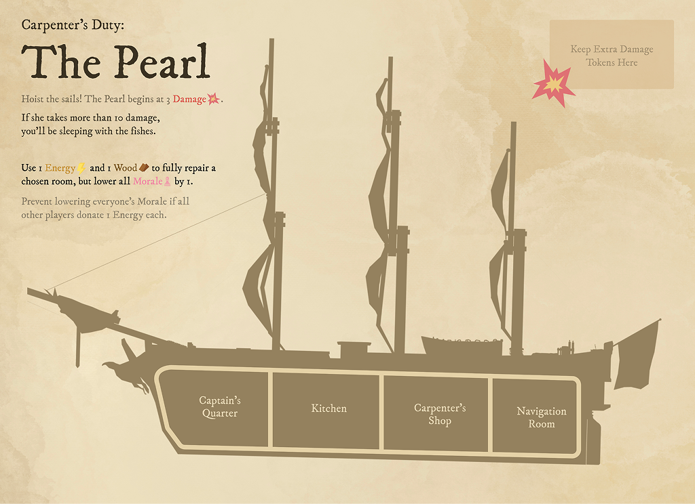

Goal 项目目标
Explore gameplay as both an experiential and social system by designing a game centered on ethical dilemmas and survival decisions, encouraging players to reflect on morality through play. 通过设计一款围绕道德困境与生存抉择展开的游戏，探索游戏作为体验系统与社交系统的可能性，并引导玩家在游玩过程中反思道德选择。
Showcase 展示视频
The Lost was selected for the SFU SIAT Project Gallery and featured on the SFU Showcase website. 《迷途》入选 SFU SIAT Project Gallery，并展示于 SFU Showcase 官方页面。
01 Description 01 项目简介
The Lost is a pirate-themed cooperative survival adventure board game in which players must work together to maintain the ship and crew while recovering lost memories and hidden treasures. Four players take on the roles of different crew members—Captain, Navigator, Chef, and Carpenter—and sail across mysterious seas to collect three key treasures that unlock the final mystery. 《迷途》是一款海盗主题的合作生存冒险桌游。玩家需要共同维持船只与船员的状态，同时寻找失落的记忆与隐藏的宝藏。四位玩家将分别扮演船长、领航员、厨师和木匠，在神秘海域中航行，收集三件关键宝藏，并逐步揭开最终的真相。 To win, the team must recover all three treasures while keeping the crew alive and surviving ongoing shortages of resources. 玩家需要在资源持续短缺的压力下，成功收集全部三件宝藏，并确保船员存活，才能取得胜利。
02 Interaction Design 02 交互设计
From an interaction design perspective, I treated collaboration, tension, and reflection as the core drivers of The Lost. Every mechanic—resource sharing, morale shifts, diary reveals, and the final moral choice—was tuned to make players discuss, negotiate, and reconsider their priorities together, so the experience feels emotionally charged rather than purely procedural. 从交互设计的角度出发，我将合作、紧张感与反思设定为《迷途》的核心驱动力。无论是资源共享、士气变化、日记揭示，还是最后的道德抉择，这些机制都被设计为促使玩家不断交流、协商并重新审视彼此优先级，从而让整个体验不仅仅停留在流程层面，而是真正具有情绪张力。
My Work 我的工作
EXPERIENCE — 体验设计 —
Designed the emotional arc so that curiosity, tension, and cooperation naturally emerge through play. 设计整体情绪曲线，让好奇、紧张与合作能够在游玩过程中自然形成。
TRANSFORMATION — 深层蜕变 —
Built the key dilemmas and dual-ending structure so the group must choose between claiming the treasure and protecting their bonds. 设计关键困境与双结局结构，让团队必须在夺取宝藏与守护彼此关系之间做出选择。
Details 具体内容
— EXPERIENCE — 体验设计
I connected core actions—steering the ship, spending resources, and revealing diary cards—to specific table conversations such as “Do we risk the Deep Water route?”, “Whose morale do we protect first?”, and “Can we afford to repair now?”. This kept all players engaged in the same decision space and made the feeling of “we are truly on the same ship” emerge through player discussion, not just through the rule set. 我将操控船只、消耗资源与揭示日记卡等核心行动，直接连接到桌面上的具体讨论，例如“我们要不要冒险走深水区？”，“现在先保谁的士气？”，“这一轮还修得起船吗？”。这种设计让所有玩家始终处在同一个决策场域中，也让“大家真的同在一条船上”这一感觉，不只是写在规则里，而是通过玩家之间的对话真实体现出来。
— TRANSFORMATION — 深层蜕变
Across the game, players face a series of smaller trade-offs—repairing the ship, preserving morale, or conserving resources—that foreshadow the final decision around the treasure. Once the last diary is revealed, the ending—whether the crew is trapped again by greed or freed through sacrifice—resolves those earlier arguments, making the conclusion feel earned instead of merely scripted. 在游戏过程中，玩家会不断面对一系列较小但持续累积的取舍，例如优先修船、维持士气，还是节省资源。这些抉择都会逐步铺垫到最终围绕宝藏展开的关键选择。当最后一张日记被揭开时，无论结局是因贪婪而再次陷入循环，还是因牺牲而获得解脱，都会自然回应前面所有争论，使结尾显得顺理成章，而非单纯的剧本安排。

03 Systems & Mechanics 03 系统与机制
The Lost is a 4-player cooperative survival game built around three intersecting systems: morale, resources, and exploration. My goal was to make these systems both legible and interdependent: 《迷途》是一款围绕士气、资源与探索三大核心系统构建的四人合作生存游戏。我的重点是让这些系统既清晰易读，又彼此联动：
- Every shift in morale affects player capabilities. 每一次士气变化都会影响玩家能力表现。
- Every resource decision creates downstream consequences. 每一次资源决策都会带来后续影响。
- Every move across the sea map pushes the story closer to its reveal. 海图上的每一次移动，都会推动故事更接近最终揭示。

My Work 我的工作
RESOURCE — 资源系统 —
Designed the shared morale tracker and the overall energy economy. 设计共享士气追踪器与整体体力资源循环。
EXPLORATION — 探索结构 —
Created the sea map with “fog-covered” islands that reveal their type only when players land on them, making movement decisions both risky and meaningful. 设计海上地图，并加入“被迷雾覆盖”的岛屿机制，只有在登陆后才会揭示岛屿类型，使航行选择同时具备风险与意义。
BALANCE — 数值平衡 —
Defined the four asymmetric roles and rebalanced the starting damage values and resource flow. 定义四个非对称角色，并重新调整初始伤害设定与资源流动节奏。
Details 具体内容
— RESOURCE — 资源系统
I reduced player status into a few clear states: high morale grants bonus abilities, while low morale adds an energy cost or temporarily restricts actions. This made the stakes immediately readable. 我将玩家状态收束为几个清晰的层级：高士气会提供额外能力，低士气则会增加体力消耗，或暂时限制行动。这样可以让风险与收益一目了然。 When playtests showed that the game was too forgiving, I reduced resource income and increased event penalties so players had to face tougher choices more regularly instead of progressing too comfortably. 当测试表明游戏整体过于宽松时，我降低了资源获取量，并提高了事件惩罚，使玩家必须更频繁地面对艰难决策，而不是过于顺利地推进。
On the right: the Chef's Morale Tracker, showing the current state of each crew member. 右图：厨师使用的士气追踪板，用于显示每位船员当前的状态。

— EXPLORATION — 探索结构
The map combines safer routes with Deep Water paths and hidden island cards, forcing the Captain and Navigator to weigh speed against risk on every turn. 地图同时包含较安全的航线、深水区路径，以及隐藏式岛屿卡，这迫使船长与领航员在每一回合都必须在速度与风险之间做出权衡。 This structure prevents exploration from becoming a solved path and helps every voyage feel distinct. 这种结构避免了探索过程沦为固定解法，也让每一趟航行都更具变化性。
On the right: the sea map used by the Captain and Navigator to steer the ship. 右图：由船长与领航员共同使用的海图，用于决定船只航向。

— BALANCE — 数值平衡
I positioned the Captain, Navigator, Chef, and Carpenter around distinct subsystems—direction, distance, morale, and ship health—then adjusted values until every role consistently produced urgent and meaningful decisions. 我让船长、领航员、厨师和木匠分别对应不同的子系统：方向、距离、士气与船体状态，再通过持续调参，让每个角色都能稳定地产生紧迫且有意义的决策。 In later iterations, I reduced the Carpenter's repair efficiency and introduced default ship damage so repairs became a shared team concern rather than a trivial maintenance task. 在后期迭代中，我削弱了木匠的修理效率，并加入了默认船体损伤设定，使修船不再只是一个轻量维护动作，而成为整个团队都必须共同面对的问题。


Going further 更多内容
What I did beyond my position 其他贡献
04 Visual Design 04 视觉设计
For the card and visual design, I treated each card as a small interface that needed to be instantly readable while still feeling emotionally aligned with the game's tone. I built a consistent pirate-adventure visual system through typography, layout, and icon language, and hand-illustrated all the creatures and treasures so they feel like pages taken from the crew's own logbook. 在卡牌与整体视觉设计中，我将每一张卡都视为一个小型界面：它既要能被玩家快速读取，也要在情绪上与游戏整体氛围保持一致。我通过字体、版式与图标语言建立了一套统一的海盗冒险视觉系统，并手绘了所有生物与宝藏，使它们看起来像是直接取自船员航海日志中的页面。 Together, these visuals help players scan information quickly while already feeling the tension and mystery of sailing across a cursed sea. 这些视觉元素共同作用，让玩家在快速读取信息的同时，也能自然感受到在被诅咒海域中航行的紧张感与神秘气氛。


Reflection 项目反思
Interaction Design Through System Tuning 通过系统调优的交互设计
Working on The Lost sharpened my understanding of how interaction design connects with system design. Early on, I focused too much on building complex subsystems, but playtesting showed that what really mattered was whether the morale-resource-exploration loop created clear, shared decisions that players naturally had to discuss—“Who do we save?”, “Do we risk Deep Water?”, and “Do we repair now?” 《迷途》的设计过程让我更清楚地理解了交互设计与系统设计之间的关系。项目初期，我一度过于关注复杂子系统的搭建，但测试结果表明，真正关键的是士气—资源—探索这一循环，是否能够持续制造出清晰且共享的决策，让玩家自然地产生讨论，例如“先救谁？”，“要不要冒险进入深水区？”以及“现在要不要修船？” Iterating on the morale tracker, resource economy, and map risk levels taught me how small changes in numbers and states can shift the experience from calm optimization to genuine tension. I also learned that the final dual ending only feels meaningful when the smaller trade-offs throughout the game have already pushed players to negotiate values, not just numbers. 在不断迭代士气追踪器、资源经济与地图风险等级的过程中，我体会到，数值与状态上的细小改动，就足以让体验从平稳优化转变为真正紧张的博弈。我也进一步认识到，只有当玩家在前面的每一次小取舍中，讨论的早已不只是数值，而是价值判断本身，最后的双结局才会真正显得有意义。
Next Steps for 《迷途》 The Lost 迭代展望
If I continue developing The Lost, I would further simplify edge-case rules, strengthen the unique decision space of each role, and explore a light campaign structure so that morale shifts, diary reveals, and endings can accumulate across multiple voyages rather than within a single session alone. 如果未来继续开发《迷途》，我会进一步简化边缘规则，强化每个角色各自独特的决策空间，并尝试加入轻量化的战役结构，让士气变化、日记揭示与结局结果能够跨越多次航行持续累积，而不只局限于单次游戏流程。